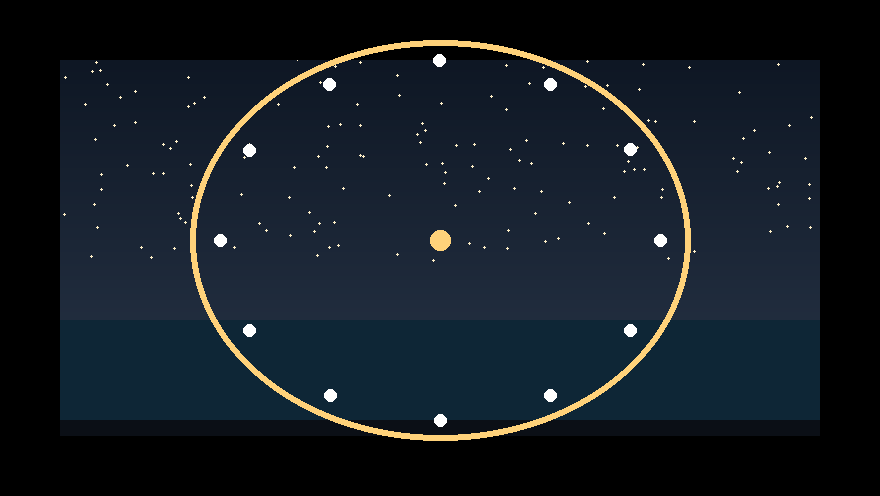

The dome with a missing sky
أدر قرصين مثقوبين تحت ضوء القبة حتى تتكون الكوكبة. أول طلب له حلان متناظران ونقبلهما. الوضع الحر ينزّل سماءك.
Turn two discs to form the card constellation. First card accepts two symmetric solutions.
العب ≈ 5 د
بطاقة الطلب: △ مثلث نجمي